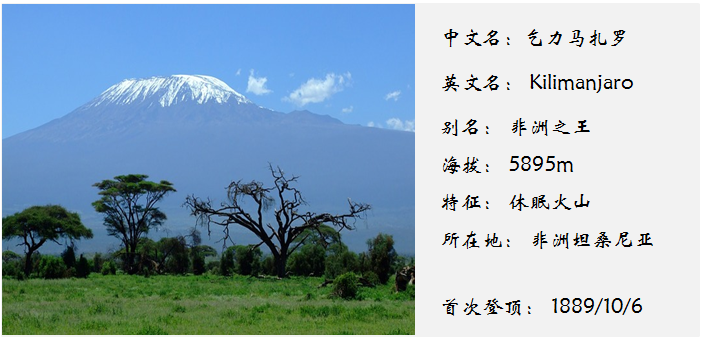
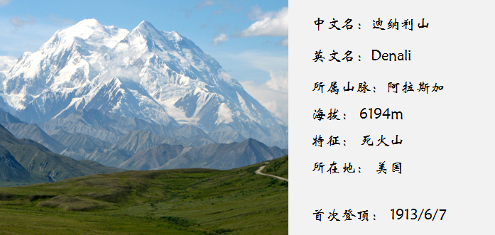

小爱会在本篇博客里介绍非洲的乞力马扎罗山与北美洲的迪纳利山
非洲-乞力马扎罗
乞力马扎罗山位于坦桑尼亚东北的乞力马扎罗区，临近肯尼亚边界，因为是非洲的第一高峰，因此被称为“非洲屋脊”、“非洲之王”。在斯瓦希里语里Kilimanjaro是“灿烂发光的山”（不用想，肯定是很神圣的一座山）。事实也是这样：乞力马扎罗山在坦桑尼亚人心中是一座圣山，很多当地的部落每年都在这里举行祭祀活动。
乞力马扎罗山的自然带十分明显，包括：高山寒漠带，积雪冰川带，高山草甸带、温带森林带、亚热带常绿阔叶林带和赤道雨林带。正是由于这样特殊的自然带，乞力马扎罗山顶是冰雪大世界，而山下广阔的土地呈现出的却是热带草原景色。至于攀爬难度，正如小爱提到的，在七大顶峰里，乞力马扎罗里唯一 一座不需要任何专业攀登技术就可以登顶的山。
北美洲-迪纳利
迪纳利山位于美国阿拉斯加州的东南部，是北美洲的最高峰。关于这座山的名字呢，是一波三折，以前，阿拉斯加州的原住民称这座山为迪纳利（Denali），不像其他的山名都有特殊的含义，迪纳利就是“大山”的意思。之后出了点小意外，在1896年的某一天，一名淘金者在得知威廉•麦金利已经被提名为共和党总统候选人（这是他在荒无人烟的大山里听到的第一个消息），因此将这座山命名为麦金利山。可笑的是，这位总统从未去过爬过这座山。1917-2015，美国官方一直称其为麦金利山（由这点也可以看出美国的霸道作风）。在原住民不懈的努力下，2015年8月31日，这座山又更名为迪纳利。
由于太平洋暖流的影响，迪纳利山区的气候比较温和，海拔较低的地段孕育了繁茂的森林。这里也是野生动物的保护区，常见的动物有驯鹿、灰熊和麋等。对于世界的登山者们来说，麦金利当然也是他们的梦想，每年的5月至7月会吸引大批登山者光顾，可惜的是只有一半不到的人能登顶成功。
如果你觉得这篇博客有趣而且对你有帮助，请分享给你的朋友， 让他们也一起涨姿势哦。